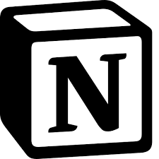

Notion é um aplicativo de produtividade e anotações desenvolvido pela Notion Labs, Inc. Foi lançado pela primeira vez em 2016 e está disponível na web, além de aplicativos para desktop e dispositivos móveis. Sua sede está localizada em San Francisco.
Notion é uma plataforma de colaboração com quadros kanban, tarefas, wikis e bancos de dados. Ele funciona como um espaço de trabalho para anotações, gestão do conhecimento, organização de dados e acompanhamento de projetos e tarefas. Pode ser acessado por aplicativos multiplataforma e pela maioria dos navegadores da web.
O Notion utiliza inteligência artificial e uma biblioteca de modelos gratuitos e pagos. O Notion AI auxilia os usuários na escrita e melhoria de conteúdo, resumindo notas existentes, ajustando o tom e traduzindo ou revisando textos.